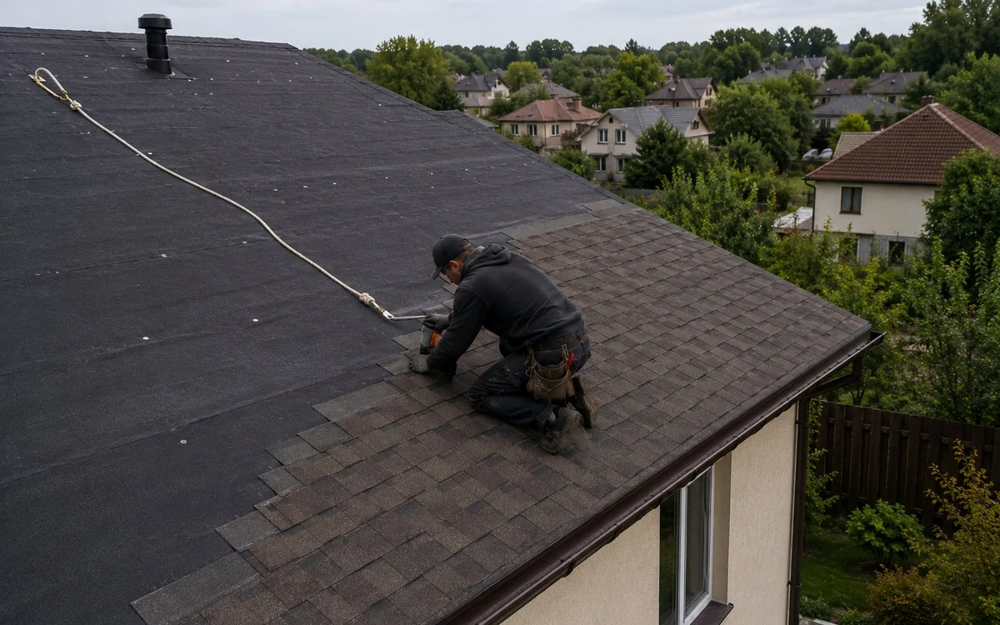

Спочатку оцінюють стан конструкції, а вже потім обирають матеріал. Однакова ознака на двох об’єктах може мати різне походження.
Ендова
Починати варто з безпечного огляду та фіксації ознак. Важливо зрозуміти, коли проявляється проблема, чи змінюється вона після дощу, вітру або перепаду температури.
Що перевіряють
На об’єкті звертають увагу на такі елементи:
- основа
- ендовий елемент
- нахлести
- кріплення
- очищення
Як оцінюють ситуацію
Рішення залежить від стану основи, доступу до прихованих шарів і того, чи є дефект локальним. Поверхневе виправлення має сенс лише тоді, коли причина знаходиться у доступному вузлі, а сусідні елементи залишаються справними.
Помилки, яких варто уникати
- вузька ендова
- кріплення у водяному жолобі
- сміття під покриттям
- відсутність підсилення
Герметик або латка не замінюють діагностику. Спочатку визначають межі дефекту, потім обирають спосіб втручання.
Коли потрібен огляд
Якщо дефект повторюється або поширюється, потрібен огляд. Фотографії корисні для попереднього розуміння, але вони не показують вологу всередині утеплювача, стан деревини та приховані стики.
Поширені запитання
Чи можна перевірити проблему без розбирання?
Частину ознак видно без демонтажу. Відкривати конструкцію потрібно лише там, де інакше неможливо встановити причину.
Що підготувати перед консультацією?
Загальні фотографії даху, крупні плани проблемної ділянки, знімки з горища та короткий опис умов, за яких з’являється дефект.
Матеріал перевірено на основі практики з 2017 року
METROPLEX працює у сфері малоповерхового будівництва, проєктування та покрівельних рішень. У матеріалі описані загальні принципи. Остаточне рішення приймається після аналізу конструкції конкретного об’єкта.